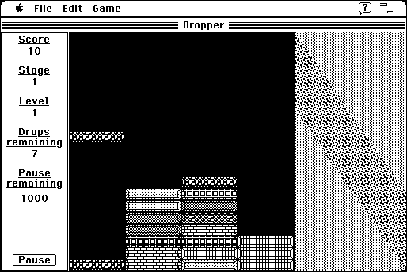

Download
Dropper.1.3.zip (57K) Dropper 1.3.1 repackaged into a zipped hfs disk image and checksum file. The disk image can be mounted with Mini vMac.
Dropper.1.3.SEA.hqx (90K) Dropper 1.3.1 in the original format.
copyright: C.K. Haun, RavenWare Software
mod date: Apr 1, 1996
license: freeware, former shareware
official url :
RavenWare Software
"Cubes drop from the top of the window, and your goal is to stack and line them up." for "Mac OS 7-9"

If you find these downloads useful, please consider helping the Gryphel Project, which hosts them.
Here are the md5 checksums for the downloads, signed with Gryphel Key 5:
--------- GRY SIGNED TEXT --------- 5f129556cd1c0b1a87387b2d628a55c5 Dropper.1.3.zip cb55ffec9a9cd722b44330a456a1d946 Dropper.1.3.SEA.hqx ------- BEGIN GRY SIGNATURE ------- Gry/4Xa8CFcUzxdN/L8ZxlxeAc2LPu6zZ5xvOYHjsP5Cbx1oEaX1ML7PCzPcpeEG UakasS23pn4SS79Hoptmldx/LvqLJ8lo+6N0cJXlBLSEc5bQqlKSmeTmO8fvqGt7 LV5WC0uH99SFV0BrROEMA6W+cb+Nq3RgSqB4xK8We8hKWEuK9faDiFMil5wJAPCk -------- END GRY SIGNATURE --------